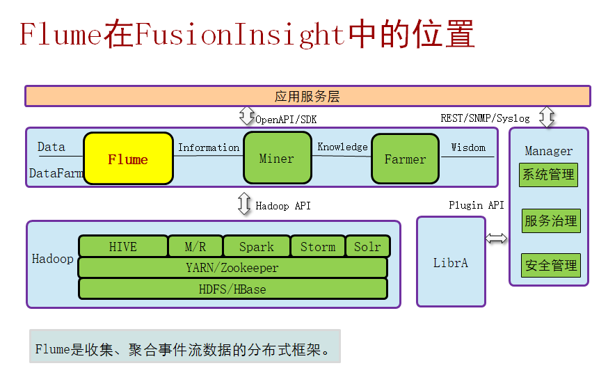

Flume是什么
是一个开源的,分布式，高可靠高可用的海量日志聚合的日志系统
用于收集数据；同时，Flume提供对数据进行简单处理，并写到各种数据接受方（可定制）的能力。
采用流式日志采集工具，对数据进行简单的处理写入
- Flume适用场景：应用系统产生的日志采集，采集后的数据供上层应用分析。
- Flume不适用场景：大量数据的实时数据采集（要求低延迟、高吞吐率）。
- 与其他开源日志收集工具scribe比较而言，几乎不用用户开发，scribe需要用户另外开发client,而Flume每一种数据源均有相应的source去读取或者接收数据。
架构
- Flume基础架构：Flume可以单节点直接采集数据，主要应用于集群内数据。

- Flume多agent架构：Flume可以将多个节点连接起来，将最初的数据源经过收集，存储到最终的存储系统中。主要应用于集群外的数据导入到集群内。


- Source:数据源，即是产生日志信息的源头，Flume会将原始数据建模抽象成自己处理的数据对象：event。
- Channel Processor:通道处理器，主要作用是将source发过来的数据放入通道（channel）中。
- Interceptor：拦截器，主要作用是将采集到的数据根据用户的配置进行过滤、修饰。
- Channel Selector：通道选择器 ，主要作用是根据用户配置将数据放到不同的通道channel）中。
- Channel:通道，主要作用是临时缓存数据。
- Sink Runner: Sink运行器，主要作用是通过它来驱动Sink Processor, Sink Processor驱动sink来从channel中取数据。
- Sink Processor:sink处理器，它主要是根据配置使用不同的策略驱动sink从channel中取数据，目前策略有：负载均衡、故障转移、直通。
- Sink:主要作用是从channel中取出数据并将数据放到不同的目的地。
- event：一个数据单元，带有一个可选的消息头，Flume 传输的数据的基本单位是 event，如果是文本文件，通常是一行记录，这也是事务的基本单位。
- Event 从 Source，流向 Channel，再到 Sink，event本身为一个 byte 数组，并可携带 headers 信息。
- event代表着一个数据流的最小完整单元，从外部数据源来，流向最终目的。
Flume Agent由Source、Channel、Sink组成，如图1所示，模块说明如表1所示。

图1 Flume结构图1

Flume也可以配置成多个Source、Channel、Sink，如图2所示：

图2 Flume结构图2
Flume还支持多个Flume Agent级联，如图3所示。

图3 Flume级联结构图
Flume级联消息压缩、加密
Flume级联节点之间的数据传输支持压缩和加密，提升数据传输效率和安全性。
Flume数据监控

传输可靠性:

- Flume采用基于Transactions的方式保证数据传输的可靠性，当数据从一个Agent流向另外一个Agent时，两个Transactions已经开始生效。发送Agent的Sink首先从Channel取出一条消息，并且将该消息发送给另外一个Agent。如果接受消息的Agent成功地接受并处理消息，那么发送Agent将会提交Transactions，标识一次数据传输成功可靠地完成。
- 当接收Agent接受到发送Agent发送的消息时，开始一个新的Transactions，当该数据被成功处理（写入Channel中），那么接收Agent提交该Transactions，并向发送Agent发送成功响应。
- 如果在某次提交（commit）之前，数据传输出现了失败，将会再次开始上一次Transcriptions，并将上次发送失败的数据重新传输。因为commit操作已经将Transcriptions写入了磁盘，那么在进程故障退出并恢复业务之后，仍然可以继续上次的Transcriptions。
- Flume在传输数据过程中，采用事务管理方式，保证传输过程中数据不会丢失，增强了数据传输的可靠性，同时缓存在channel中的数据如果采用file channel，进程或者节点重启数据不会丢失。(及事件采集或发送失败，会重新采集或发送)
传输过程数据过滤

Flume在传输数据过程中，可以简单的对数据简单过滤、清洗，可以去掉不关心的数据，同时如果需要对复杂的数据过滤，需要用户根据自己的数据特殊性，开发过滤插件，Flume支持第三方过滤插件调用 Flume在传输数据过程中，可以简单的对数据简单过滤、清洗，可以去掉不关心的数据，同时如果需要对复杂的数据过滤，需要用户根据自己的数据特殊性，开发过滤插件，Flume支持第三方过滤插件调用
注：
- Inteceptor:过滤器，可以对数据过滤。
- Channel selector:通道选择器，可以根据事件将数据发到不同的channel中，实现数据路由功能。
- Source端配置可增加正则匹配过滤。